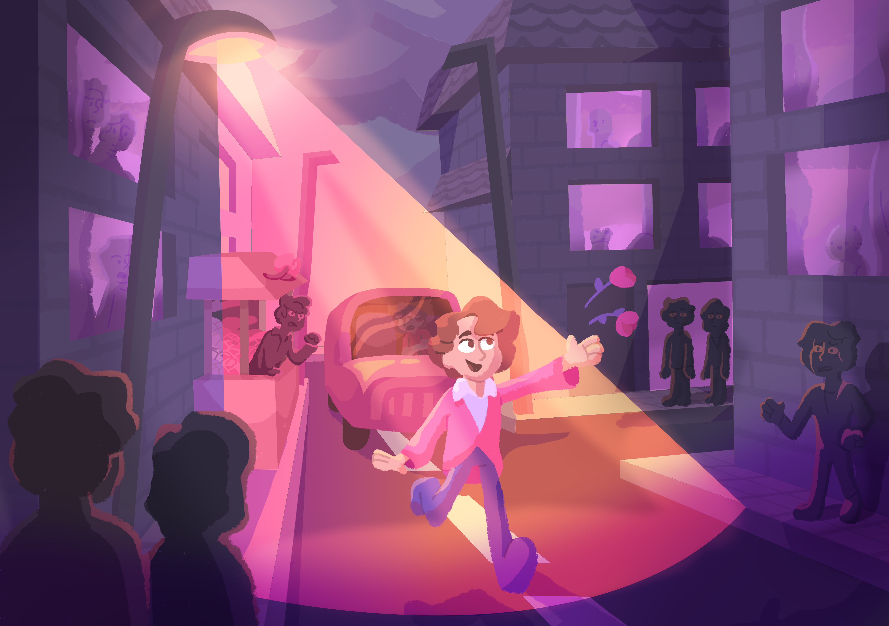
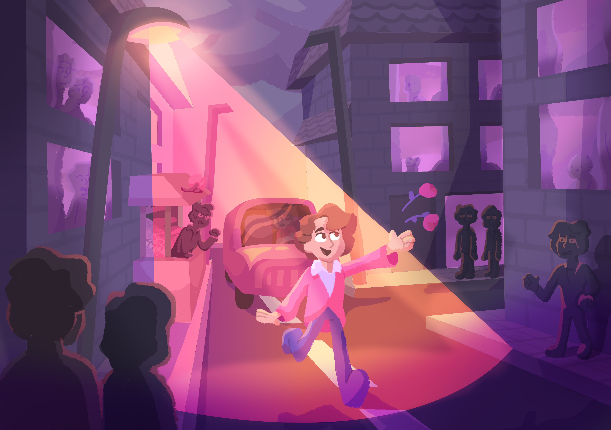

All Eyes on Me
Rol: Volledig zelfgemaakt - April 2023
Een digitaal kunstwerk over een man die iereen altijd in de weg loopt, omdat hij zichzelf ziet als "de hoofdrolspeler".
Ik haal veel plezier uit tekenen en illustreren. Ik heb altijd honderden plaatjes in mijn hoofd, en als ik een potlood oppak, doet die het werk voor mij. Daarom vind ik het leuk om tekeningetjes te maken - tot aan grote kunstwerken!
Rol: Volledig zelfgemaakt - April 2023
Een digitaal kunstwerk over een man die iereen altijd in de weg loopt, omdat hij zichzelf ziet als "de hoofdrolspeler".
Rol: Volledig zelfgemaakt - Oktober 2022
In een wereld waar er niets meer over is dan afval, zijn de kleinste dingen al snel een hoop waard. Enorme machines, de zogenaamde "Scharrelaars", verkennen de wereld en verzamelen rommel waaruit ze zichzelf verder kunnen bouwen. Een concept en karakterontwerp uitgewerkt tot digitaal schilderij.